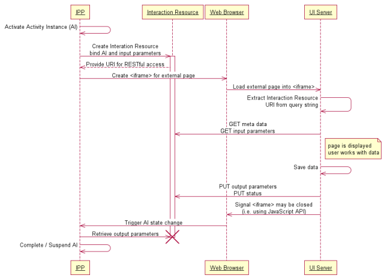

UI Mashups provide the option to combine workflow data and functionality with processes or services in other applications. Stardust supports the integration of other Web applications via UI Mashup applications to be able to merge information from multiple sources and use and display Web-based data efficiently. Using these UI Mashup applications makes it possible to combine services from different Web sites into the Stardust Portal.
Stardust supports the integration of Web-based UIs for business process management activities into its Stardust Portal. Using process-driven UI mashups is based on several assumptions:
Web UI integration is introduced by Stardust to offer:
Web UI development proves to be a quickly changing environment offering a rapidly changing variety of tools. Most of those tools are script-based. Thus the productivity of Web developers can be increased by using non-Java (or rather non-JVM) based Web user interfaces.
The support for non-colocated deployment of Stardust and integrated Web user interfaces, provides the following advantages:
The most common use case are mapping mashups. Data sets that contain location data can be presented graphically by using maps. For example, many mashups apply information to Google Maps. Google Maps provides API allowing Web developers to mash data onto maps. Such mapping mashup API allows users to use maps, which they enrich by adding information via process data like location and description.
A classic example is the integration of business addresses and online maps so that you can quickly find the location in your neighborhood.
A company renting apartments could use such a mashup to apply their information by location. The customers can see the locations they are interested in and which they selected in a list on an interactive map. In that case the location data could be used together with photos and other information on the object.
Other common use cases for UI mashups are:
Often these mashup types occur in combined versions.
Being browser-based, there is no server side session that could be used to share state between Stardust and the GWT (Google Web Toolkit) application.
Thus, Stardust provides specific APIs, which are described in the section JavaScript API and SOAP Web Service API respectively. A GWT application might be integrated as follows:
ippInteractionUri=http://...
Location.getParameter("ippInteractionUri")
and stores it as a field for example.For detailed information on the usage of GWT applications, please refer to the Google Web Toolkit documentation site.
Another example use case is to mashup angular based UI into the Stardust Portal. We provide a detailed tutorial, which guides you through the steps to perform such a mash up. It describes how to ensure that data entered on the Angular UI is saved in the Stardust data and the Stardust data can be read and displayed in the Angular UI mashed up in the Stardust Portal. You find this tutorial in chapter Mashing up Angular based UI into Stardust Portal in our Tutorial Guide.
Stardust provides techniques for lightweight and implementation technology neutral Web mashups as follows:
To enable REST based interaction with an interactive activity instance, Stardust provides the concept of an Interaction Resource. This resource provides means to perform the following interactions according to REST principles:
An HTTP binding of the WADL endpoint is typically be provided at
${ippServicesBaseUri}/rest/application.wadl
Find an example WADL (Web Application Description Language) description at the Web Application Description Language site of W3C.
The lifecycle of any interaction resource is associated with the duration of the associated activity instance in state Application.
No manipulation to the Interaction resource will immediately cause a state change on the associated activity instance. Such state change will only occur under orchestration from the embedding Stardust Portal.
Depending on the data type being used for input and output parameters for interactions, various media types can be produced and consumed. The following list describes the primary media type per data type and possible alternative representations:
As batch operations need to encode multiple parameters in one data structure, there is no means of providing the same kind of flexibility in media type support as with single parameter read / writes. The representation for batch reads and writes is application/xml. The values for parameters are included in the XML message in their primary representation.
The following sequence diagram depicts the message flow between all participants:

Figure: Sequence Diagram describing Message Flow
An additional SOAP API equivalent to the previously described REST API is provided. The mapping between SOAP operations and REST requests is as follows:
An HTTP binding of the SOAP endpoint is typically be provided at
$\{ippServicesBaseUri\}/soap/BpmInteractionsService
A WSDL contract can be obtained from
${ippServicesBaseUri\}/soap/BpmInteractionsService?wsdl
To simplify Web UI development, the base location of the calling Stardust Portal services endpoints is provided by an additional query parameter named ippServicesBaseUri, for example:
ippServicesBaseUri=http://localhost:9090/dev/services
This query parameter can be used to transparently bind to a SOAP endpoint implementation of the invoking Stardust Portal.
Embedded Web UIs are provided with a JavaScript API supporting in-browser interactions with the embedding Stardust Portal. The API is provided in form of a JavaScript source file, which you find in the folder META-INF/xhtml/processportal of the ipp-workflow-perspective.jar, residing in the ipp-portal.war.
This file needs to be included as follows:
<script type="text/javascript" src="${ippPortalBaseUri}/plugins/processportal/IppProcessPortalClient.js"></script>
If this path is not accessible, then copy the IppProcessPortalClient.js from the ipp-workflow-perspective.jar file and specify the location of the copied file.
After inclusion, a new module IppProcessPortalClient will be available. Any of the following operations is exposed as a function defined in the IppProcessPortalClient module.
The IppProcessPortalClient provides the following methods:
| JavaScript-Call | Description |
|---|---|
| IppProcessPortalClient.completeActivity() | Completes the current activity instance |
| IppProcessPortalClient.suspendActivity() | Suspends the current activity instance |
| IppProcessPortalClient.abortActivity() | Aborts the current activity |
| IppProcessPortalClient.qaPassActivity() | Passes quality assurance for the activity. If using this function, make sure that the activity is in Review state. |
| IppProcessPortalClient.qaFailActivity() | Fails quality assurance for the activity. If using this function, make sure that the activity is in Review state. |
You can use such code in your custom pages, which are shown via the External Web application application type. You can leverage the activity-instance buttons of the Stardust Portal toolbar right away in your own page by the JavaScript methods mentioned above.
<html>
<head>
<script type="text/javascript" src="${ippPortalBaseUri}/plugins/processportal/IppProcessPortalClient.js"></script>
</head>
<body>
<button onclick="IppProcessPortalClient.completeActivity()">Complete your activity instance now</button>
</body>
</html>
To simplify Web UI development, the base location of the calling Stardust Portal is provided by an additional query parameter named ippPortalBaseUri, for example:
ippPortalBaseUri=http://localhost:9090/dev
This query parameter can be used to transparently bind to a JavaScript implementation of the invoking Stardust Portal.
To allow embedded panel to actively terminate the current interaction and allow the user to work on different activities, the functions completeActivity, suspendActivity(boolean) and abortActivity are provided. Both functions will cause an equivalent side effect as explicitly clicking on the appropriate button in the activity panel toolbar. The following example shows how to invoke this API from a Grails submit button, triggering a Suspend and Save:
<g:submitToRemote class="save" value="Save and Close" action="ajaxPost"
onComplete="IppProcessPortalClient.suspendActivity(true)>
Successful termination of a Web UI interaction will require a previous write of output parameters via either a REST operation against the Interaction Resource or an equivalent invocation of the appropriate Web Service API.
When using external panels that are session-based, launching multiple ICEfaces or Trinidad activity panels via URI query parameters can break the initialization of the embedded panels. Thus, if external panels are session based, please make sure the state management is considering the interaction ID in addition of using session scope. Please note that Trinidad and ICEfaces panels embedded sharing the portal session can be adjusted by using portalTab scope beans instead of session scope beans.
In case you use External Web Applications in cluster or load balancer scenarios, it is recommended to configure additional patterns in the Web context parameters servicesBaseUri and portalBaseUri in your web.xml file to point to the local host and port.
The default settings for these patterns are the following:
<context-param>
<param-name>InfinityBpm.PortalBaseUri</param-name>
<param-value>${request.scheme}://${request.serverName}:${request.serverPort}/${request.contextPath}<param-value>
</context-param>
<context-param>
<param-name>InfinityBpm.ServicesBaseUri</param-name>
<param-value>${request.scheme}://${request.serverName}:${request.serverPort}/${request.contextPath}/services/</param-value>
</context-param>
You can overwrite some of these pattern or replace serverName with serverLocalName to influence the creation of the URL.
For example if you like to use https: as protocol and use a fixed port and serverLocalName, you could set the following:
<context-param>
<param-name>InfinityBpm.ServicesBaseUri</param-name>
<param-value>https://${request.serverLocalName}:44556/${request.contextPath}/services/</param-value>
</context-param>
UI Mashup applications can be modeled in the Eclipse modeler as well as in the Portal Modeling perspective. Refer to chapters Using External Web Applications and UI Mashup Application respectively.
For a tutorial guiding you through a use case example refer to chapter Mashing up Angular based UI into Stardust Portal in the Tutorial Guide.